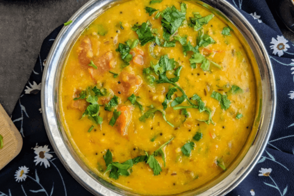

Dal Recipe

Here's where I'd put a detailed description of how to make dal:
Ingredients:
- 3 cups red and/or yellow lentils
- 4–6 serrano chiles, depending on heat preference, stemmed and seeded
- 1 large onion, chopped
- 5 cloves garlic
- 3” piece fresh ginger, peeled and roughly chopped
- 2 tablespoons curry powder
- 2 teaspoons ground cumin
- 2 teaspoons ground turmeric
- 1 teaspoon chili powder
- 1/2 teaspoon granulated sugar
- 1 28 ounce can diced tomatoes
- Kosher salt, to taste
- 4 tablespoons butter, optional
- 14 ounces heavy cream or unsweetened coconut milk
- 1/4 cup cilantro leaves
- Freshly squeezed lemon juice, to serve
- Basmati rice, to serve
- Naan, to serve